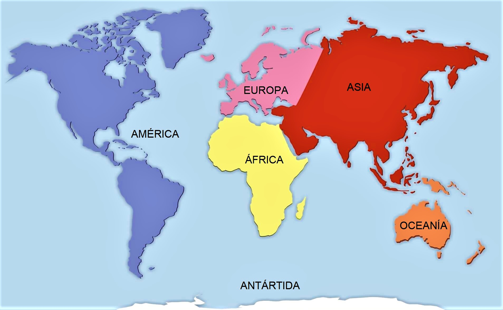
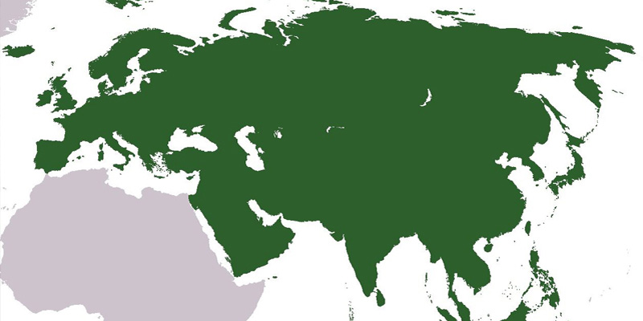

Hístoria da Terra
Mapa Múndi

O mapa-múndi, também chamado de mapa do mundo, é uma representação gráfica da Terra em uma superfície plana, mostrando continentes, países, oceanos e linhas imaginárias que ajudam na localização geográfica.
Países Transcontinentais

Países transcontinentais são aqueles cujo território se estende por mais de um continente. Essa definição pode variar comforme critérios geográficos, políticos ou culturais. Por exemplo: Rússia, Turquia, Armênia, Azerbaijão e Geórgia
| Nome | Área | População | Maior país | Menor país | Oceanos |
|---|---|---|---|---|---|
| América | 42.189.120 km² | 1.022.380.810 hab. | Canadá | São Cristóvão e Neves | Pacífico, Atlântico e Glacial Ártico |
| África | 30.221.532 km² | 1.225.080.510 hab. | Argélia | Seicheles | Atlântico, Índico, Ártico e Antártico |
| Europa | 10.180.000 km² | 741.447.158 hab. | Rússia | Vaticano | Glacial Ártico e Atlântico |
| Ásia | 43.810.582 km² | 4.462.676.731 hab. | Rússia | Maldivas | Glacial Ártico, Índico e Pacífico |
| Oceania | 9.008.458 km² | 40.117.432 hab. | Austrália | Nauru | Índico e Pacífico |
| Antártida | 14.000.000 km² | C. 1000 (não-permanente) hab. | ------- | ------- | Glacial Antártico |
| Mundo | 149.440.850 km² | 8.281.598.523 hab. | Rússia | Vaticano | Todos os oceanos |